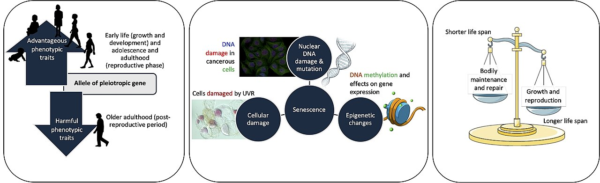
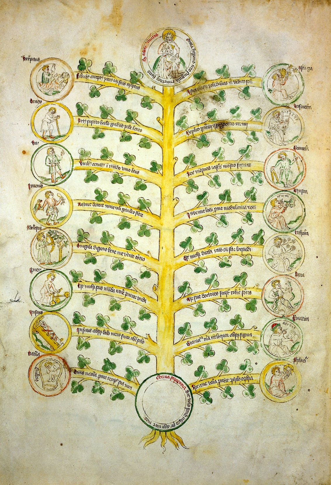

Late Adulthood
Late adulthood is not one experience but many. The years after sixty-five stretch across three or four decades and hold newlyweds and great-grandparents, marathon runners and hospice patients — which is why no single portrait of “old age” is ever true. This chapter takes up three questions people have asked for as long as they have grown old: why does the body age at all, what happens to the mind, and why do some people flourish in their final decades while others fade. You will meet the biologists who study cellular wear, the psychologists who chart memory and wisdom, and Erik Erikson, who saw in old age a last great task — to look back on one whole life and be able to call it good.
By the end of this chapter you can
- Distinguish programmed theories of aging from damage/error theories, and name the leading example of each.
- Explain the Hayflick limit and the role of telomeres in cellular aging.
- Separate primary aging from secondary aging and explain why the distinction matters.
- Describe the typical changes in the body and the senses in late adulthood, including presbyopia and presbycusis.
- Contrast normal age-related memory change with the memory loss of dementia, and describe Alzheimer disease.
- Summarize Erikson’s eighth stage, integrity versus despair, and the strength — wisdom — that resolves it.
- Compare disengagement, activity, continuity, and socioemotional selectivity theories of social aging.
- State what researchers mean by successful aging.
Section 1Why we age

Two great families of theory
Senescence is the gradual, universal decline in the body’s function that comes with time — the reason a seventy-year-old heart, kidney, and immune system do not perform like a twenty-year-old’s. Biologists have long argued about why it happens, and their explanations sort into two camps. Programmed theories hold that aging is built in — part of the genetic plan, a clock that ticks whether or not the body is damaged. Damage (or error) theories hold the opposite: aging is the accumulation of wear, injury, and mistakes that the body cannot fully repair. The honest modern answer is that both are partly right, and they act together.
The programmed camp
The most famous programmed idea is the Hayflick limit. In the 1960s Leonard Hayflick showed that normal human cells grown in a dish divide only a finite number of times — roughly forty to sixty — and then stop, entering replicative senescence. The clock behind that limit is the telomere, a protective cap of repeated DNA on the end of each chromosome. Every division shaves a little off the telomere; when it grows too short, the cell can no longer divide safely and shuts down. Other programmed theories point to a hormonal clock (the endocrine theory — menopause is its clearest signpost) and to a preset decline of the immune system (the immunological theory, or immunosenescence), which leaves older adults more vulnerable to infection and cancer.
The damage camp
The oldest damage idea is simple wear and tear: parts used for decades wear out. The most influential modern version is the free-radical theory, proposed by Denham Harman — reactive oxygen molecules, produced constantly by normal metabolism, nick DNA, proteins, and membranes, and the damage piles up faster than repair can keep pace. A related idea, cross-linking, describes how sugars bond onto proteins (glycation) and stiffen tissues over time, contributing to rigid arteries and clouded lenses.
| Theory | Camp | Core idea | Everyday sign |
|---|---|---|---|
| Telomere / Hayflick limit | Programmed | Cells can divide only a set number of times as telomeres shorten | Tissues renew more slowly with age |
| Endocrine | Programmed | A hormonal clock paces the decline | Menopause; falling growth & sex hormones |
| Immunological | Programmed | Immune defense is set to wane | Rising infection and cancer risk |
| Free-radical (oxidative) | Damage | Reactive oxygen molecules accumulate and injure cells | Oxidative damage rises across the lifespan |
| Cross-linking | Damage | Sugars bond to proteins and stiffen tissue | Stiff collagen, arterial stiffening, cataracts |
- Theories of aging split into programmed (aging is scheduled) and damage/error (aging is accumulated wear).
- The Hayflick limit caps normal cell divisions; shortening telomeres are the clock.
- The free-radical (oxidative) theory is the leading damage explanation; cross-linking stiffens tissues.
- No one theory explains aging — programmed and damage processes operate together.
Section 2The aging body and senses

Primary versus secondary aging
The single most useful idea in this chapter is the split between two kinds of aging. Primary aging is the universal, intrinsic, unavoidable biological change that happens to every human who lives long enough — gray hair, slower reflexes, the lens of the eye stiffening. Secondary aging is decline caused by disease, disuse, environment, and lifestyle — the heart disease that follows decades of smoking, the type 2 diabetes that follows years of inactivity. The distinction matters enormously, because a great deal of what people blame on “just getting old” is actually secondary aging: not inevitable, often preventable, and sometimes reversible.
Changes across the body
Primary aging touches every system. The skin loses collagen, elastin, and fat, so it thins, wrinkles, and bruises more easily. Muscle mass falls — a process called sarcopenia — and bone loses density, becoming osteoporosis when the loss is severe (especially in women after menopause). Together these raise the risk of falls and fractures, one of the great threats to independence in late life. The cardiovascular system stiffens: arteries harden, maximum heart rate falls, and blood pressure tends to creep up. Underlying all of it is a loss of reserve capacity — the spare margin every organ keeps for handling stress. A young body shrugs off a bout of pneumonia or a hot day; an old body has less cushion, which is why the same insult can tip an older adult into crisis.
The senses
The senses dim in characteristic ways. In the eye, presbyopia — the loss of near focus — sends nearly everyone to reading glasses by their late forties, and the lens later clouds (cataract) while the retina and optic nerve grow more vulnerable (macular degeneration, glaucoma). In the ear, presbycusis takes the high frequencies first, which is why an older adult may hear that you are speaking but miss the consonants, and struggle most in a noisy room. Taste and smell fade too, blunting appetite and putting nutrition at risk, and declines in touch and balance add to the danger of falls.
| System | Typical primary change | Everyday effect |
|---|---|---|
| Vision | Presbyopia; clouding lens (cataract) | Reading glasses, more light needed, glare |
| Hearing | Presbycusis (high frequencies lost first) | Trouble with consonants and noisy rooms |
| Muscle & bone | Sarcopenia; osteoporosis | Weakness; fall and fracture risk |
| Heart & vessels | Arterial stiffening; lower max heart rate | Rising blood pressure; less exertional reserve |
| Skin | Less collagen, elastin, and fat | Wrinkling, thinning, easy bruising |
- Primary aging is universal and intrinsic; secondary aging comes from disease, disuse, and lifestyle and is often preventable.
- Sarcopenia (muscle loss) and osteoporosis (bone loss) drive falls and fractures.
- Vision loses near focus (presbyopia); hearing loses high frequencies first (presbycusis).
- Falling reserve capacity means older bodies meet stress with less margin.
Section 3Cognition and memory

What the mind keeps and what it loses
Aging does not empty the mind; it reshapes it unevenly. Psychologists distinguish fluid intelligence — processing speed, working memory, and the ability to solve novel problems — from crystallized intelligence, the store of vocabulary, facts, and know-how a person has accumulated. Fluid intelligence begins a slow decline in early adulthood; crystallized intelligence holds steady or keeps growing well into late life. In memory, the same pattern holds: episodic memory for recent events and working memory slip the most, while semantic memory (general knowledge) and procedural memory (how to ride a bike, how to cook a familiar meal) are well preserved. The everyday face of normal aging is a slower search — the tip-of-the-tongue moment, the misplaced keys, the name that surfaces an hour later.
Wisdom and emotion
Something is also gained. Researchers define wisdom as expert judgment about the practical and uncertain problems of living — weighing competing perspectives, tolerating ambiguity, and giving good counsel. Paul Baltes and his colleagues studied it as the pragmatics of life, and while wisdom is not automatic with age, it becomes more common. Emotion, too, often improves: older adults report steadier moods and show a positivity effect, attending more to positive information and letting go of the small frictions that preoccupy the young.
When it is more than aging: dementia and Alzheimer disease
Dementia is an acquired, progressive decline across two or more cognitive domains, severe enough to interfere with daily life. It is not a normal part of aging — most people who reach their eighties never develop it. The commonest cause, roughly two-thirds of cases, is Alzheimer disease. Its hallmark pathology is a pair of abnormal proteins: beta-amyloid plaques that build up between neurons and tau neurofibrillary tangles that choke them from within. The damage begins in the hippocampus and entorhinal cortex — the brain’s memory hub — which is why the first symptom is losing recent memories, and then spreads outward. The course runs from an early stage (recent memory, word-finding), through a middle stage (language, orientation, and the activities of daily living), to a late stage of near-total dependence. Age is the biggest risk factor; family history and the APOE-e4 gene add to it, as do the same cardiovascular risks that harm the heart.
| Feature | Normal age-related change | Dementia |
|---|---|---|
| Forgetting | Misplaces keys, recalls the event later | Forgets whole events; cannot retrace them |
| Words | Occasional tip-of-the-tongue | Frequent; substitutes wrong words |
| Daily life | Stays independent | Impaired — missed bills, getting lost |
| Course | Stable year to year | Progressive decline |
| Insight | Aware of the lapses | Often unaware |
- Crystallized intelligence (knowledge, vocabulary) holds up; fluid intelligence (speed, working memory) declines.
- Wisdom — expert judgment about life’s pragmatics — can grow, and emotion regulation often improves.
- Dementia is an acquired, progressive loss of cognition that impairs daily life; it is not normal aging.
- Alzheimer disease, the commonest dementia, shows beta-amyloid plaques and tau tangles beginning in the hippocampus.
Section 4Integrity versus despair

Erikson’s eighth stage
Erik Erikson mapped the whole lifespan as eight psychosocial stages, each turning on a central tension the person must resolve. The eighth, the work of late adulthood, is integrity versus despair. Its task is to look back over the one life a person has actually lived and make sense of it as a whole. Integrity is the acceptance that this life — with its choices, losses, and limits — was meaningful and one’s own; it brings coherence and a measure of peace with mortality. Despair is the opposite: bitterness, unappeasable regret, and the panicked sense that time has run out to set things right or start again. As with every Erikson stage, the resolution is rarely all one or the other, but a favorable balance tilted toward integrity. The strength, or virtue, that emerges from that balance is wisdom.
The life review
The psychiatrist Robert Butler described the mental process behind this stage as the life review — a natural, often intensified turn toward reminiscence in later life, as a person surveys memories, reworks old conflicts, and searches for meaning. Far from “living in the past,” the life review is active construction: it is how a life gets integrated. Clinicians put it to use as reminiscence therapy, guiding older adults through their memories to ease depression and restore a sense of worth. And the eighth stage does not stand alone — it rests on the seventh, generativity versus stagnation, and on everything before it. A life spent caring for others and building things that outlast the self gives the older adult the most to look back on with integrity.
| Stage | Approx. period | Crisis | Virtue |
|---|---|---|---|
| 1 | Infancy | Trust vs mistrust | Hope |
| 2 | Toddler | Autonomy vs shame & doubt | Will |
| 3 | Early childhood | Initiative vs guilt | Purpose |
| 4 | School age | Industry vs inferiority | Competence |
| 5 | Adolescence | Identity vs role confusion | Fidelity |
| 6 | Young adulthood | Intimacy vs isolation | Love |
| 7 | Middle adulthood | Generativity vs stagnation | Care |
| 8 | Late adulthood | Integrity vs despair | Wisdom |
- Erikson’s eighth stage is integrity versus despair; its virtue is wisdom.
- Integrity = accepting one’s life as meaningful; despair = bitterness and fear that time has run out.
- Butler’s life review is a normal, meaning-making reminiscence; reminiscence therapy puts it to clinical use.
- The eighth crisis builds on the seventh (generativity) and every stage before it.
Section 5Aging well

Three ways to explain social aging
Why do social lives change in late adulthood, and what pattern is healthiest? The first influential answer, disengagement theory (Elaine Cumming & William Henry, 1961), claimed that aging brings a mutual, natural withdrawal — the older adult pulls back from society and society pulls back from the older adult. It once seemed plausible, but the evidence turned against it: withdrawal predicts worse well-being, not better. The rival activity theory (associated with Robert Havighurst) argues the reverse — that satisfaction comes from staying active and replacing lost roles with new ones — and it fits the data far better. Continuity theory adds a refinement: people age best by carrying forward their long-standing personalities, interests, and habits rather than by reinventing themselves.
Choosing what matters: socioemotional selectivity
The most powerful modern account is socioemotional selectivity theory, developed by Laura Carstensen. Its insight is that behavior depends on how much time a person feels stretches ahead. When the horizon is open, as in youth, people invest in gathering information and meeting new contacts. When the horizon narrows, as it does in late life, priorities shift toward emotionally meaningful goals and toward the people who matter most. The result is not passive disengagement but active selection: social networks grow smaller yet deeper, and the same positivity effect seen in memory shows up in relationships. Older adults are not lonelier by default — they are choosier. The convoy model (Robert Kahn & Toni Antonucci) captures the enduring inner circle of family and close friends who travel with a person across the decades, even as widowhood — more common for women — reshapes it.
What “successful aging” means
John Rowe & Robert Kahn gave the field its best-known model of successful aging: avoiding disease and disability, maintaining high physical and cognitive function, and staying actively engaged with life. Critics rightly note that the model can feel too demanding — it seems to shut out those living with chronic illness or disability, who may nonetheless report deep well-being. That objection points to a companion idea from Paul and Margret Baltes, selective optimization with compensation (SOC): people age well by selecting the goals that matter most, optimizing the abilities that serve them, and compensating for what has been lost — the pianist Arthur Rubinstein playing fewer pieces, more slowly practiced, with contrast added to disguise the slowing. Aging well, in the end, is less about escaping decline than about adapting to it with meaning intact.
| Theory | Core claim | Standing today |
|---|---|---|
| Disengagement | Older adults and society mutually withdraw | Largely rejected |
| Activity | Staying active and replacing roles sustains well-being | Well supported |
| Continuity | People age best by keeping long-standing patterns | Supported |
| Socioemotional selectivity | Shrinking time horizons shift priorities to emotional closeness | Strongly supported |
- Disengagement theory (mutual withdrawal) is largely rejected; activity and continuity theories fare far better.
- Socioemotional selectivity theory: shrinking time horizons make people prioritize close, meaningful relationships.
- Successful aging (Rowe & Kahn) = avoiding disease, keeping function, and staying engaged.
- Selective optimization with compensation describes how people adapt to loss and keep thriving.
The chapter in one breath
- Senescence is explained by programmed theories (telomeres and the Hayflick limit, endocrine and immune clocks) and damage theories (free radicals, cross-linking) acting together.
- Primary aging is universal and intrinsic; much of what we blame on age is secondary — from disease and disuse — and preventable.
- Bodies lose reserve capacity; senses fade (presbyopia, presbycusis); sarcopenia and osteoporosis drive falls and fractures.
- Crystallized intelligence holds while fluid intelligence slows; wisdom and emotion regulation can grow.
- Dementia — chiefly Alzheimer disease, with its plaques and tangles — is a progressive loss of function, not normal aging.
- Erikson’s eighth stage, integrity versus despair, asks the older adult to accept a life as meaningful; its virtue is wisdom, aided by Butler’s life review.
- Socioemotional selectivity, activity, and continuity — not disengagement — best describe healthy social aging; successful aging blends health, function, and engagement.
ReferenceWords worth knowing
A quick reference for the terms in this chapter — skim it now, or circle back whenever a word trips you up.
- Activity theory
- The view that well-being in late life comes from staying active and replacing lost roles with new ones.
- Alzheimer disease
- The commonest dementia, marked by beta-amyloid plaques and tau tangles beginning in the hippocampus.
- Crystallized intelligence
- Accumulated knowledge, vocabulary, and know-how; it holds steady or grows in late adulthood.
- Dementia
- An acquired, progressive decline in two or more cognitive domains severe enough to impair daily life; not normal aging.
- Disengagement theory
- The largely rejected idea that older adults and society naturally and mutually withdraw from each other.
- Fluid intelligence
- Processing speed, working memory, and novel problem solving; it declines gradually from early adulthood.
- Free-radical theory
- A damage theory holding that reactive oxygen molecules accumulate and injure cells over a lifetime.
- Hayflick limit
- The finite number of times a normal cell can divide before entering replicative senescence.
- Integrity versus despair
- Erikson’s eighth stage: accepting one’s life as meaningful (integrity) versus bitterness and regret (despair).
- Life review
- Robert Butler’s term for the natural, meaning-making reminiscence of late life; the basis of reminiscence therapy.
- Osteoporosis
- Severe loss of bone density, common after menopause, that raises the risk of fractures.
- Presbycusis
- Age-related hearing loss that affects high frequencies first, hurting speech clarity in noise.
- Presbyopia
- Age-related loss of the eye’s ability to focus on near objects.
- Primary aging
- Universal, intrinsic, unavoidable biological change that comes with time.
- Reserve capacity
- The spare functional margin an organ keeps for meeting stress, which shrinks with age.
- Sarcopenia
- The age-related loss of muscle mass and strength; responsive to resistance training.
- Secondary aging
- Decline caused by disease, disuse, environment, and lifestyle; often preventable.
- Selective optimization with compensation (SOC)
- Baltes’ model of adapting to loss by selecting key goals, optimizing strengths, and compensating for deficits.
- Senescence
- The gradual, universal decline in biological function that accompanies aging.
- Socioemotional selectivity theory
- Carstensen’s theory that shrinking time horizons shift priorities toward emotionally meaningful goals and relationships.
- Telomere
- A protective cap of repeated DNA on a chromosome’s end that shortens with each cell division.
- Wisdom
- Expert judgment about the practical, uncertain problems of living; the virtue of Erikson’s eighth stage.